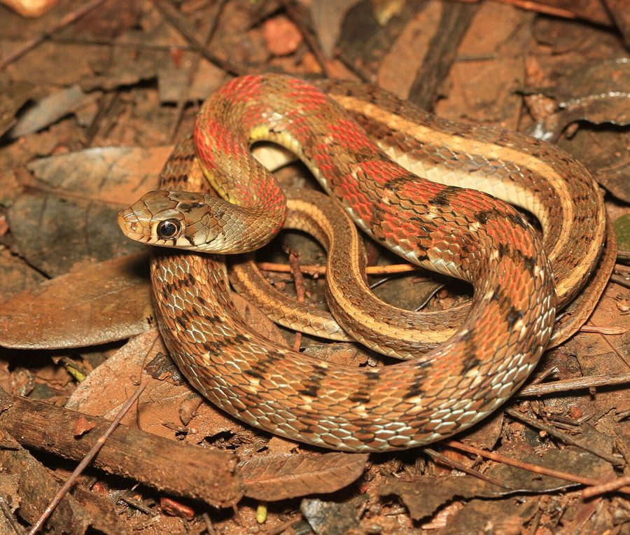

सीता की लटBuff-striped Keelback
Amphiesma stolatum · Colubridae · REP-0013

- Scientific name
- Amphiesma stolatum (Linnaeus, 1758)
- Family
- Colubridae
- Hindi
- सीता की लट
- Status here
- native
- IUCN
- LC
When to look कब देखें
Expected mainly in June, July, August, September, October, November.
सीता की लट / Buff-striped Keelback
Amphiesma stolatum (Linnaeus, 1758) — Colubridae
सीता की लट (बफ-स्ट्राइप्ड कीलबैक) — नमी वाले क्षेत्रों, घास के मैदानों और धान के खेतों में पाया जाने वाला एक अत्यंत शांत और पूरी तरह से विषरहित (non-venomous) सांप है। इसका शरीर जैतून-भूरे रंग का होता है, जिस पर सिर के पीछे से लेकर पूंछ तक जाने वाली दो पीली-सफेद (buff-coloured) समानांतर पट्टियां होती हैं। स्थानीय लोककथाओं के अनुसार, इन सुंदर पट्टियों की तुलना माता सीता के बालों की लट से की गई है, जिससे इसे "सीता की लट" नाम मिला है। यह सांप स्वभाव से बहुत शर्मीला और डरपोक होता है और खतरा होने पर भागने की कोशिश करता है; पकड़े जाने पर भी यह शायद ही कभी काटता है। यह मुख्य रूप से बरसात के मौसम में सक्रिय होता है और तालाबों व गीले खेतों के किनारे छोटे मेंढकों और केंचुओं का शिकार करता है।
Quick Identification त्वरित पहचान
| Feature | Description |
|---|---|
| Form | Slender, cylindrical body; head is distinct from the neck; tail is long and thin |
| Markings | Two bright, cream-yellow or buff longitudinal stripes running down the back from neck to tail |
| Colour | Olive-green, greyish-brown, or bronze ground colour, often with black spots between the stripes |
| Scales | Strongly keeled (ridged) dorsal scales, giving the skin a rough texture |
| Head | Distinctly defined, with large, symmetrical shields; snout is rounded |
| Eyes | Large, with gold-flecked irises and round pupils |
| Behaviour | Extremely gentle and non-aggressive; active during daylight hours near wet vegetation |
Field tip: Any small, rough-scaled snake with two yellow-buff stripes running down its back found in wet grass or paddy fields during the monsoon is a Buff-striped Keelback. It never bites and is harmless.
Morphology आकारिकी
Biometrics (typical measurements for adult specimens in monsoon floodplains of eastern UP):
| Measurement | Range |
|---|---|
| Tail length | 10–18 cm |
| Total length | 40–70 cm |
| Weight | 60–120 g |
Dorsal pattern: The ground colour varies from olive-green to grey-brown. The two longitudinal buff-coloured stripes run parallel down the entire length of the back. In the neck region, there are often alternating black and orange-yellow vertical bars between the stripes, which become visible when the snake inflates its body in defense. The belly is white or pale cream, occasionally with small black dots at the edges of the scales.
Scales: Dorsal scales are strongly keeled, arranged in 19 rows at midbody. The head has large, smooth shields. The anal scale is divided.
Dentition: Aglyphous dentition (lacks fangs). Possesses numerous small, solid, backward-curved teeth on both jaws, with the last 2 maxillary teeth being slightly enlarged but solid.
Behaviour & Ecology व्यवहार और पारिस्थितिकी
Diurnal marsh dweller.
- Activity period: Exclusively diurnal (active during the day). Active in the morning and late afternoon, crawling through wet grass and margins of water bodies.
- Gentle response: When confronted by humans, it flees into water or thick grass. If cornered, it may flatten its neck and inflate its body to show the black and orange skin between its scales, but it rarely strikes and almost never bites.
- Monsoon abundance: Becomes highly active and visible with the arrival of the monsoon rains (June–July), coinciding with the breeding activity of local frogs.
Ecological Role पारिस्थितिक भूमिका
Anuran population controller. The Buff-striped Keelback is a vital consumer of small frogs and toads, particularly [AMP-0005 Ornate Narrow-mouthed Frog] and [AMP-0006 Asian Grass Frog] in rice fields and wetlands. It helps maintain the ecological balance of amphibian populations in alluvial wetlands.
Life Cycle / Phenology जीवन चक्र
- Breeding: Mating takes place soon after emergence from winter/summer dormancy, between April and June.
- Reproduction: Oviparous (egg-laying).
- Egg-laying: The female lays a clutch of 5 to 14 white, leathery eggs in damp soil, hollow logs, or under piles of decaying vegetation in June–July.
- Hatching: Eggs hatch in 50–60 days. The hatchlings are 13–17 cm long, carrying bright stripes, and are fully independent.
Host Plants or Prey आहार
Carnivorous diet:
- Primary prey: Small frogs (such as
[AMP-0005 Ornate Narrow-mouthed Frog],[AMP-0006 Asian Grass Frog]), tadpoles, and small toads. - Alternative prey: Earthworms (such as
[SFL-0004 Red Worm]relatives), small fish, and occasionally insects.
Predators / Natural Enemies शत्रु
- Predatory birds: Herons (
[BRD-0004 Indian Pond Heron],[BRD-0030 Little Egret]), storks, and birds of prey (such as[BRD-0038 Black-winged Kite]) are primary predators. - Larger snakes: The Indian Cobra (
[REP-0005 Indian Cobra]) and Common Krait ([REP-0006 Common Krait]) prey on keelbacks. - Mammals: Mongooses (
[MAM-0002 Mongoose]) hunt them near field borders.
Agricultural / Human Relevance कृषि प्रासंगिकता
Farmer's friend. The Buff-striped Keelback is highly beneficial to farmers. It consumes agricultural insect pests indirectly (via frogs) and lives in paddy fields without posing any risk to human workers. Because it is completely harmless, it is culturally respected in some UP villages under the name "Sita's braids" and is rarely targeted by farmers who recognize it.
Expected Locally स्थानीय रूप से अपेक्षित
Not a field record. Written from published accounts for eastern Uttar Pradesh. No confirmed local sighting yet — if you have seen it, that is what the atlas needs.
अभी तक स्थानीय पुष्टि नहीं। यह विवरण प्रकाशित स्रोतों से है, किसी अवलोकन से नहीं।
Commonly observed in Basti district's paddy fields during the monsoon transplantation and weeding phases (July–August). They are frequently seen swimming in shallow drainage ditches or crawling through wet household lawns after heavy rains.
Distribution वितरण
Global range: Widespread across South Asia, including Pakistan, India, Nepal, Bhutan, Bangladesh, Sri Lanka, and parts of Southeast Asia (Myanmar, Thailand, Vietnam).
In India: Found throughout the plains and lower hills up to 1,500 metres.
In Uttar Pradesh: Extremely common resident in all alluvial plain districts.
In Basti district / eastern UP: Abundant in all rural blocks with wet crop cultivation.
Research Questions शोध प्रश्न
- How does the seasonal flooding of the Ghaghra River affect the migration and population density of Amphiesma stolatum in adjacent crop fields? / घाघरा नदी की मौसमी बाढ़ से आस-पास के खेतों में सीता की लट सांप के प्रवास और जनसंख्या पर क्या प्रभाव पड़ता है?
- What is the survival rate of Amphiesma stolatum eggs in agricultural compost piles compared to natural leaf litter? / प्राकृतिक पत्ती-कूड़े की तुलना में खेतों के कम्पोस्ट ढेरों में इस सांप के अंडों के जीवित रहने की दर क्या है?
- Does Amphiesma stolatum display any microhabitat partition when co-occurring with the semi-aquatic Checkered Keelback (
[REP-0002])? - Is the color intensity of the lateral skin bars of Amphiesma stolatum affected by its diet or body temperature?
- Can we use the cultural name "Sita ki Lat" to design school programs promoting snake conservation in eastern UP? / पूर्वी उत्तर प्रदेश में सांप संरक्षण को बढ़ावा देने के लिए क्या पारंपरिक नाम "सीता की लट" का उपयोग किया जा सकता है?
Similar Species मिलती-जुलती प्रजातियाँ
| Species | Key Difference | हिंदी |
|---|---|---|
Fowlea piscator (Checkered Keelback [REP-0002]) | Semi-aquatic; has a checkered pattern of black spots on a yellow-olive background; lacks the parallel longitudinal buff stripes; larger (reaches 100 cm); more aggressive. | डोडिया सांप — बड़ा आकार, चित्तीदार शरीर, आक्रामक |
Lycodon aulicus (Common Wolf Snake [REP-0012]) | Strictly nocturnal; has broad white/cream crossbands (not longitudinal stripes); flat spatulate head; smooth shiny scales. | कौड़िया साँप — आड़ी पट्टियां, चिकनी पीठ |
Bungarus caeruleus (Common Krait [REP-0006]) | Extremely venomous. Steel-black body with narrow white crossbands starting midbody; has a row of large hexagonal vertebral scales; lacks longitudinal stripes. | करैत — अत्यधिक विषैला, आड़ी पट्टियां |
Taxonomy & Classification वर्गीकरण
Original description. Carl Linnaeus described the Buff-striped Keelback as Coluber stolatus in 1758 in Systema Naturae (ed. 10, p. 219). The type locality was listed as Asia. It was later moved to the genus Amphiesma Duméril, Bibron & Duméril, 1854. The genus name Amphiesma is derived from the Greek for "garment" or "clothing," likely referring to the patterned skin. The specific name stolatum is Latin for "wearing a stola" (a long Roman garment with parallel folds), describing its longitudinal stripes.
Subspecies. Monotypic — no subspecies are currently recognised.
Family and order placement. Placed in the order Squamata, suborder Serpentes, family Colubridae, subfamily Natricinae (water snakes).
Phylogenetic notes. Amphiesma stolatum is the type species of the genus Amphiesma. While many former Amphiesma species have been moved to the genus Hebius, stolatum remains in the nominate genus based on morphological and molecular distinctiveness.
IUCN status rationale. Listed as Least Concern (LC) on the IUCN Red List of Threatened Species because of its wide geographic range, high population density, and tolerance of human-dominated agricultural areas. It faces no major conservation threats.
Photo Gallery फोटो गैलरी
References संदर्भ
- Linnaeus, C. (1758). Systema Naturae per regna tria naturae, secundum classes, ordines, genera, species, cum characteribus, differentiis, synonymis, locis. Tomus I. Editio decima, reformata. Laurentii Salvii, Holmiae, p. 219. [original description]
- Smith, M.A. (1943). The Fauna of British India, Ceylon and Burma: Reptilia and Amphibia. Vol. 3 — Serpentes. Taylor & Francis, London.
- Whitaker, R. & Captain, A. (2004). Snakes of India: The Field Guide. Draco Books, Chennai.
- Guo, P., et al. (2014). Systematics and biogeography of east Asian keelbacks (subfamily Natricinae). Molecular Phylogenetics and Evolution, 72: 24-33.
- IUCN SSC Snake and Lizard Specialist Groups (2024). Amphiesma stolatum. IUCN Red List of Threatened Species.
- GBIF Occurrence Data — Amphiesma stolatum, South Asia (2026). GBIF taxon key: 2458024.
Source file: species/fauna/reptiles/buff_striped_keelback.md